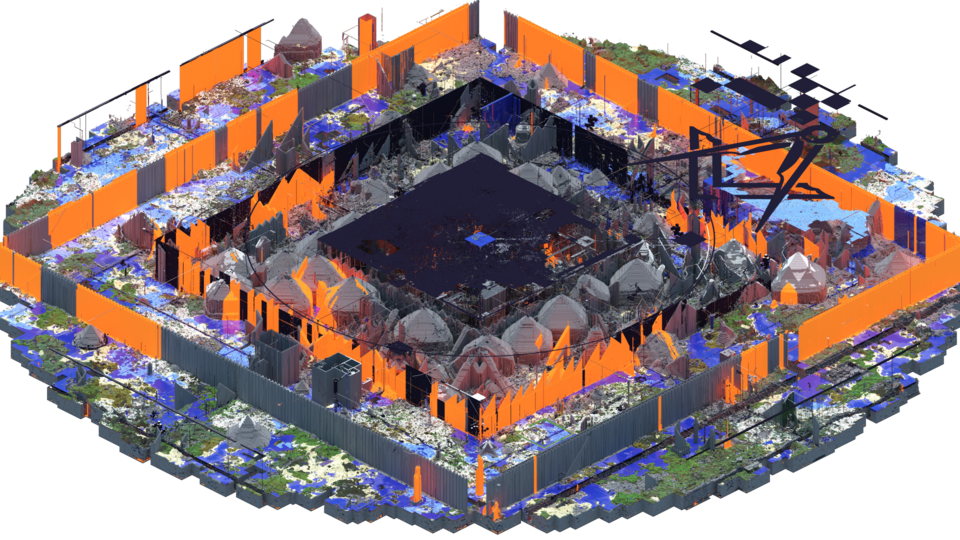
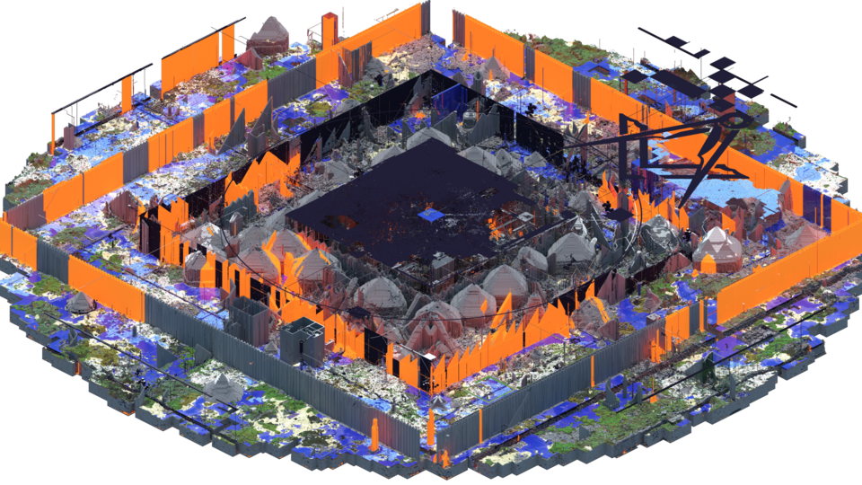

O servidor Hypixel foi lançado em
beta em 13 de abril de 2013, por Simon Collins-Laflamme e Philippe Touchette. O servidor é gerenciado e
executado pela Hypixel Inc. Os dois criaram originalmente mapas de aventura do Minecraft juntos e enviaram
trailers para seu canal no YouTube. O servidor Hypixel foi criado para jogar e exibir ainda mais esses
mapas. Os minijogos foram originalmente criados para os usuários jogarem enquanto esperavam por outros
jogadores, mas os próprios minijogos ganharam popularidade. Os esforços da Hypixel foram direcionados a
novos conteúdos do servidor em vez da criação de outros mapas e jogos do Minecraft.
A Hypixel Inc., mantenedora da Hypixel, foi registrada como uma empresa canadense sob o nome "8414483 Canada
Inc" em 23 de janeiro de 2013. Seu nome foi então modificado para "Hypixel Inc." em 2 de fevereiro de 2015.
Em 2015, foi revelado que a manutenção do servidor custava cerca de US$ 100.000 por mês.
Em 11 de junho de 2019, a Hypixel abriu o Skyblock para jogadores como um protótipo.
Durante a pandemia de COVID-19, o servidor atingiu regularmente mais de 150.000 jogadores simultâneos,
atingindo um recorde de 216.000 em 16 de abril de 2021. Em 21 de dezembro de 2016, o Hypixel atingiu 10
milhões de jogadores únicos no total, e atingiu 14,1 milhões de jogadores únicos quando o Hytale foi
anunciado em 13 de dezembro de 2018. O servidor atingiu 18 milhões de jogadores únicos em abril de 2020, de
acordo com um tweet do proprietário do servidor. Em setembro de 2015, o Hypixel atraiu 1,9 milhão de
jogadores todos os meses.
Jogadores da comunidade do servidor se uniram para escrever mais de 400.000 mensagens de condolências para o
criador de conteúdo Technoblade após sua morte em julho de 2022. As mensagens foram compiladas em 21 livros
e entregues à sua família.
Em 1º de agosto de 2024, TommyInnit atingiu 15 milhões de inscritos no YouTube. Conforme o acordo entre
Simon e Tom, Simon doou US$ 50.000 para a Sarcoma Foundation of America e concedeu a Tom a classificação
"INNIT" no servidor.
O servidor Minecraft 2b2t foi
fundado em dezembro de 2010; ele tem funcionado consistentemente sem uma reinicialização desde então. Os
fundadores são anônimos, optando por permanecer desconhecidos ou conhecidos apenas por meio de nomes de
usuário; o fundador mais proeminente é comumente chamado de "Hausemaster". O servidor opera com regras
mínimas, como um "servidor de anarquia"; exceto na correção de exploits que quebram o jogo, os operadores do
servidor são relativamente práticos na administração do servidor.
Várias explicações foram dadas para a origem do estilo livre de regras do servidor. Um operador de servidor
disse à Vice que o servidor se originou como um servidor regular de Minecraft, antes que ele e seus amigos
"decidissem abri-lo para ver quanta destruição poderia ser feita e começassem a anunciá-lo em vários lugares
na internet". De acordo com o jogador de 2b2t e arquivista amador James Rustles, Hausemaster recebeu o
controle do servidor de seu fundador original, que o havia estabelecido com base no princípio da máxima
liberdade do jogador, na tradição de um servidor de Garry's Mod que ele já possuía.
O servidor foi anunciado logo após sua criação em fóruns online como 4chan, Facepunch Studios e Reddit,
cujos usuários povoaram o servidor às centenas devido à liberdade total que ele oferecia. Membros de
diferentes fóruns invadiram uns aos outros e suas bases no servidor. Os fundadores eventualmente pararam de
jogar Minecraft, embora o servidor permanecesse online devido à grande base de jogadores que havia sido
formada. Um subreddit foi criado por um jogador em 25 de março de 2012. No início de 2013, o tamanho do
arquivo do mapa-múndi do 2b2t, que é gerado proceduralmente, foi relatado como sendo superior a 500
gigabytes. Isso aumentou para quase um terabyte no final de 2015, custando US$ 90 por mês para manter.
A cultura do 2b2t, assim como os servidores de anarquia do Minecraft em geral, é inóspita e niilista. Os
jogadores geralmente precisam esconder suprimentos e estar bem armados para sobreviver e podem esperar ser
mortos várias vezes. Isso é exacerbado pelo servidor estar configurado para dificuldade difícil e o combate
jogador contra jogador estar habilitado, tornando a sobrevivência consideravelmente mais difícil. Jogadores
veteranos costumam ser hostis aos novos jogadores no servidor, a quem costumam chamar de "newfags". O chat
em todo o servidor geralmente contém spam, trolling e trash talking, bem como insultos raciais, ameaças de
morte e propaganda nazista. Links para conteúdo obsceno e vídeos gritadores também são comuns. Os jogadores
mentem para os outros com a intenção de enviá-los para locais no jogo com armadilhas. Uma regra comum entre
os jogadores é não confiar nos outros.
Armadilhas são colocadas deliberadamente ao redor da área onde os jogadores entram no servidor pela primeira
vez: poços de lava, áreas incendiadas e portais que levam à lava ou áreas fechadas de obsidiana que forçam
os jogadores a se desconectarem e se reconectarem, esperando novamente na longa fila. Alguns jogadores criam
grandes obstáculos chamados "lavacasts", nos quais água e lava são despejadas repetidamente por escadas de
pedra, criando montanhas de paralelepípedos irregulares. Essas estruturas cercam completamente a área de
spawn e muitas são tão altas quanto o limite de altura do mapa.
Ocasionalmente, houve eventos em que dezenas de jogadores se reuniram para assumir o controle do spawn por
um tempo para construir uma grande base, matar muitos jogadores novos ou destruir outras bases, o que era
conhecido como "incursões de spawn". Jogadores inexperientes podem precisar de muitas tentativas e várias
horas para "escapar" da área de spawn, onde recursos foram consumidos ou destruídos por milhares de blocos
em todas as direções. A causa mais comum de morte é a fome por não conseguir escapar da área de spawn. Um
jogador pode durar cerca de 1.500 blocos de viagem sem comida antes de morrer de fome sem a ajuda de hacks
ou falhas. Roisin Kiberd da Newsweek especulou que suportar o desafio pode ser parte do apelo de 2b2t: já
que "ninguém sobrevive por muito tempo, há um orgulho em ter morrido lá."
Jogadores experientes residem longe da área de spawn em relativa segurança para jogar e construir. O mapa é
menos destruído mais longe do spawn, permitindo árvores e animais. Estradas construídas por jogadores
chamadas "highways" são usadas para viajar para fora do spawn. O servidor não tem etiqueta em relação à
propriedade; qualquer coisa que seja construída pode ser destruída a qualquer momento se for encontrada por
outros jogadores. Essa destruição, conhecida como griefing, é tão comum no servidor que Brendan Caldwell do
Rock, Paper, Shotgun a descreveu como sendo "apenas uma forma de clima". Apesar dessa cultura de hostilidade
e destruição, há um evento todo Dia da Mentira em que o servidor muda para um mapa diferente por alguns dias
e os jogadores podem se reunir e cooperar.
Os jogadores frequentemente fazem uso de clientes Minecraft modificados que incorporam truques como visão de
raio-X, mira aprimorada de arco e espada e radar; essas modificações são permitidas pelas regras do 2b2t
(falta de). Esses clientes ajudam imensamente a permitir que o jogador navegue pelo ambiente e sobreviva.
Jogadores sem esses clientes estão em desvantagem.
Como o mapa do servidor tem mais de uma década, o 2b2t desenvolveu uma subcultura insular com sua própria
história e ethos. Martin Paul Eve, pesquisador em humanidades digitais, descobriu que o wiki que documenta a
história do 2b2t "refere-se ao universo do jogo como se fosse uma totalidade". Ele o compara aos recursos
que documentam a cena Warez; eles se misturaram à própria subcultura e são difíceis de entender sem uma
experiência direta.
O servidor The Hive foi fundado em
fevereiro de 2013 por três desenvolvedores experientes na criação de jogos para Minecraft: Youri Kersten
(ClankStar), Ed Barlow (edb0xx3r) e Matt AjaX (JollyajaX). Antes do lançamento oficial, os fundadores já
haviam trabalhado em servidores populares como The Herobrine e Trouble in Mineville, cujas ideias foram
levadas para o The Hive. O objetivo era claro: criar um ambiente divertido, acessível e seguro para
jogadores de todas as idades, com minigames de alta qualidade dentro de uma estrutura centralizada.
Logo após seu lançamento, o The Hive se destacou na versão Java do Minecraft com jogos como Hide and Seek,
Survival Games, DeathRun, Splegg e BlockParty. Esses jogos eram inovadores, com mecânicas únicas e sistemas
de pontuação competitivos, que incentivavam os jogadores a se engajar por longos períodos. A qualidade da
programação e do design de mapas era alta, o que ajudou o servidor a crescer rapidamente em popularidade,
tornando-se um dos maiores do mundo.
Com o crescimento do Minecraft Bedrock Edition (a versão unificada entre dispositivos móveis, consoles e
Windows 10), a Mojang começou a procurar parceiros para integrar servidores diretamente ao menu do jogo. Em
novembro de 2017, durante o evento MINECON Earth, o The Hive foi anunciado como um dos servidores oficiais
da Bedrock Edition. Após meses de desenvolvimento, o servidor foi lançado oficialmente em 16 de outubro de
2018.
O The Hive Bedrock trouxe uma experiência refinada e moderna. Entre os modos iniciais estavam Treasure Wars
(um tipo de “Bed Wars”), Hide and Seek, DeathRun e Survival Games. Com o tempo, novos jogos foram sendo
adicionados, como Murder Mystery (março de 2019), Just Build (março de 2020) e SkyWars (maio de 2020). A
cada novo modo, o servidor atraía milhares de jogadores, chegando a picos superiores a 50.000 jogadores
simultâneos.
Um dos diferenciais do The Hive foi sua capacidade de realizar eventos ao vivo dentro do jogo. Em dezembro
de 2019, por exemplo, foi realizado um evento de Natal em tempo real que reuniu mais de 14 mil jogadores
conectados em uma única instância. Além disso, o servidor promove eventos sazonais como Ghost Invasion
(Halloween), Snow Wars (Natal/Páscoa) e The Questmaster, que oferece desafios e recompensas diárias.
O servidor também inovou no lado técnico. Ele usa um sistema inteligente de redirecionamento regional por
meio do IP geo.hivebedrock.network, que conecta automaticamente o jogador à região mais próxima (América do
Norte, Europa ou Ásia). Isso garante baixa latência e melhor desempenho em qualquer lugar do mundo. Além
disso, sua equipe mantém uma loja de cosméticos e passes de batalha 100% compatíveis com o sistema de moedas
do Minecraft Marketplace.
Apesar do enorme sucesso da versão Bedrock, a edição Java do The Hive começou a perder popularidade com o
tempo. Em janeiro de 2021, os desenvolvedores anunciaram oficialmente que a versão Java seria desativada em
15 de abril de 2021. A decisão foi baseada em fatores econômicos e operacionais: enquanto a edição Bedrock
mantinha mais de 30 mil jogadores ativos regularmente, a versão Java contava com apenas 2.000 a 3.000
jogadores simultâneos — tornando inviável sua manutenção. Mesmo com o encerramento, o time reforçou que a
comunidade Java seria lembrada como parte essencial da história do servidor.
Hoje, o The Hive se mantém como um dos servidores mais ativos e respeitados do Minecraft Bedrock Edition.
Ele continua a oferecer conteúdo novo, eventos regulares, suporte multilíngue e uma comunidade ativa e
amigável. Seus minigames são frequentemente elogiados pela fluidez, criatividade e equilíbrio, atraindo
tanto jogadores casuais quanto competitivos. O legado do The Hive mostra como um servidor pode evoluir ao
longo dos anos sem perder sua essência: proporcionar diversão, segurança e inovação para milhões de
jogadores ao redor do mundo.

 
